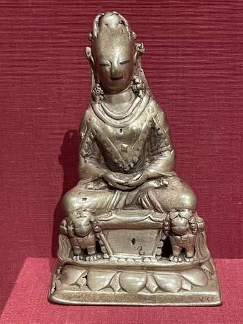
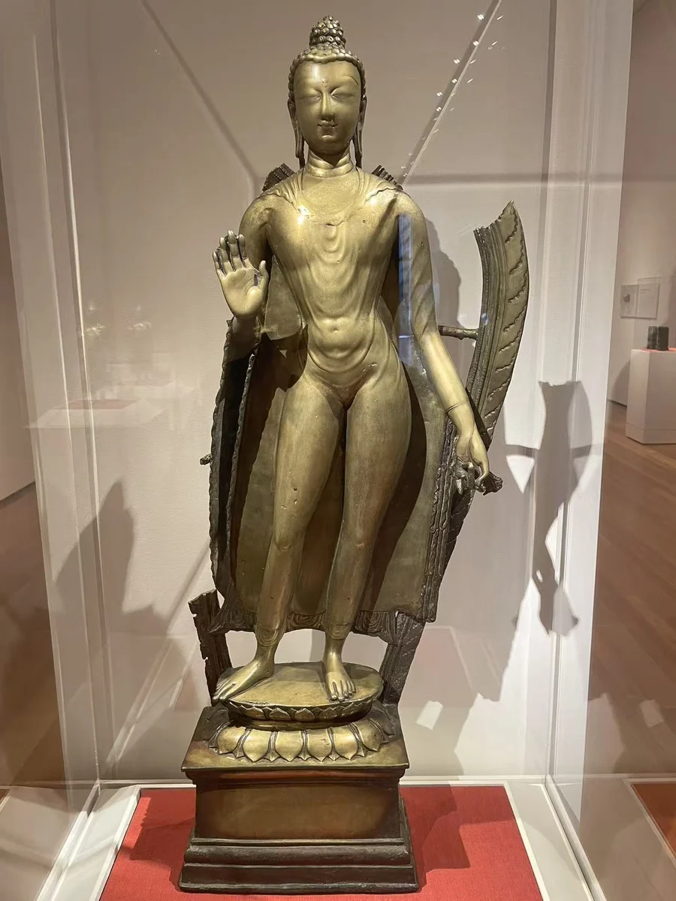
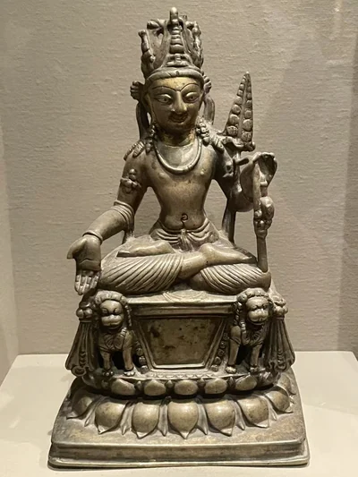
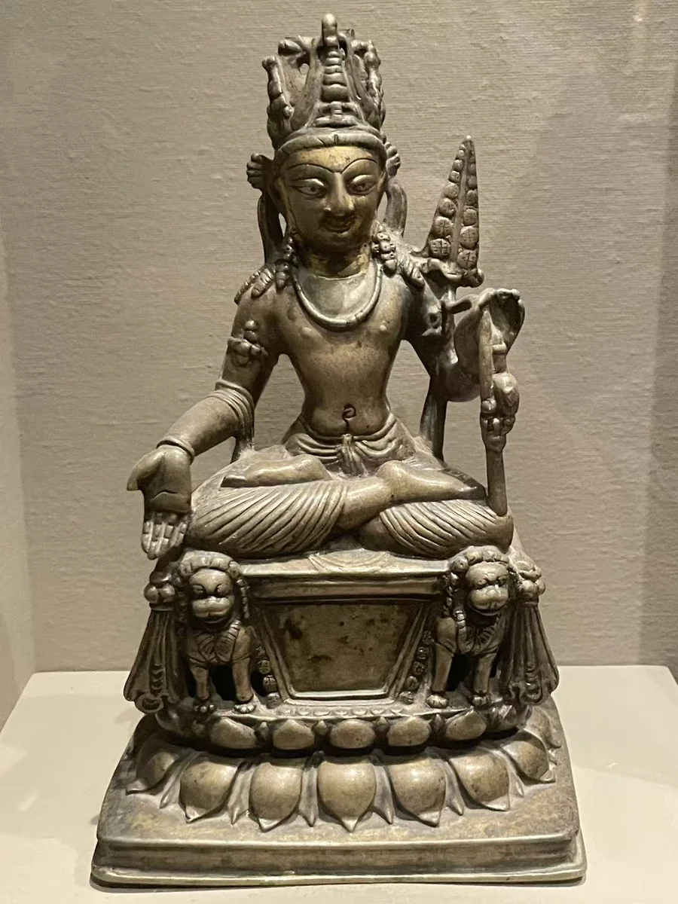

狮座宝冠佛
克利夫兰美术馆
02 / CLOSE LOOKING

克什米尔佛立像的身体细长，袈裟贴近轮廓。它的底座又留下与西藏王族僧人 Nagaraja 有关的藏文题铭：制作地与后来的供奉关系，成为同一件作品的两层历史。旁边的宝冠佛与弥勒，让狮座、冠饰和金属镶嵌显出不同的节奏。 [10] [04]
细看：左手提起的衣角；狮座与冠饰；镶银眼睛与金属表面。

克利夫兰美术馆

纳尔逊—阿特金斯艺术博物馆
图片按各自比例展示，实物不等大。
黄铜
[40]
黄铜嵌银，残彩
现场展签并列斯瓦特、吉尔吉特或克什米尔；馆方在线记录强调克什米尔风格，具体制作地点仍未确定。
[04]作品基本资料据现场展签及下列馆方记录整理；文字中的观看描述基于这里的现场照片。